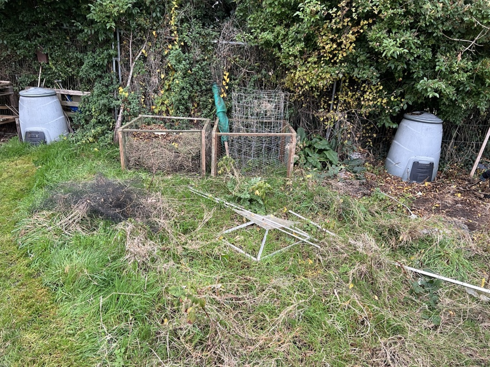

Making a start
My partner and I have recently taken on an allotment here in Canterbury. For those who don’t know, an allotment is an area of land you can rent from the council or an association designated by the council to cultivate. There’s lots of variety in rules, but generally there’s some minimum cultivation rate which you must achieve, and most people grow at least some fruit and vegetables. Some sites have running water, some do not. Some sites allow livestock (normally just chickens), some do not. Some require primarily vegetables be grown, some do not.
While I’m not totally new to allotments—my mum took one on when I was a teenager—this will be my first attempt without “supervision”. Well, not quite my first: when I was a PhD student I took on a half-allotment about a 20-minute walk from my flat, and that proved to be a bit of a barrier to getting my hands in the soil. That plot was also in worse shape than the one my partner and I have taken on, and starting in the summer meant a season of very hot work trying to clear ground to get anything planted. I’m sure some people could have made it work, but for me at that time in my life it wasn’t going to happen.
The allotment site this time is very close to our house, and I am now at a point in my life where I have some stability and predictability to make the most of an allotment. My partner has no allotment experience, but she grew veg with her father as a child. We’d like to grow some of the veg we enjoy most, I’d like some cut flowers, and we’d both like some oddities which are hard to get from the supermarket.
What we’ve taken on
It is a half-plot, which measures 5 perch (125sqm), there’s some minor existing infrastructure from the previous holder:
- An almost completely de-glazed greenhouse frame
- An old poly tunnel frame which was used to net fruit bushes
- A strawberry patch constructed as a raised bed
- A pile of misc short bits of wood, metal, and a lot of plastic sheeting
{kind=link}
The plot is overgrown with couch grass and raspberry canes. At the back of the plot there is a significant pile of plastics and waste. There is an existing small compost bin, but is very undersized for a plot this large. It is at the south-end of the allotment site, and there is no shading from trees (excellent!) and is 2-plots back from the south boundary hedge. We’re hoping this means good sun over the whole plot all summer. We are also close to a couple of taps, which is convenient!
The first task is clearing weeds and rubbish!
November progress
I’ve cleared weeds across about half the plot and dug over maybe 15% (including the greenhouse). The grass is quite difficult to remove, it sends out rhizomes underground which will sprout more grass if not fully removed. We call it couch grass (Elymus repens), apparently it is also known as twitch grass and common couch. Every time I turn over a fork of soil, I then need to dig through by hand to collect all the spaghetti-like rhizomes. The rhizomes are very brittle and only a tiny bit will allow more grass to grow, which also means we cannot simply turn the soil or rotovate it. Rotovating only breaks the rhizomes up into tiny pieces and propagates more individual plants–not what we want! It’ll probably take me a few years to get on top of it, repeatedly and carefully digging out rhizomes as they appear in the cultivated beds. Between the beds I think I would prefer wood-chip paths, rather than grass – just to reduce the spread – but grass is the default that we’ll get if we become lazy.

My partner and I have cleared out the greenhouse and dug it over too. Apparently, it was glazed with plastic which has not survived the winds. We have found we can probably get some used greenhouse glass cheaply on Facebook Marketplace, so we’ll re-glaze it with glass in the spring.
With the things left behind by the previous holders of the plot, my partner has made a couple of quick compost heaps.
My partner has cleared her way to the west boundary. We have filled 10 black sacks with rubbish to take to the local tip so far. Most of it was a poly-tunnel cover which had severely deteriorated in the sun/elements and was just festering microplastics everywhere. We also found an old air bed which we think was being used to suppress weeds. Other junk includes the metal support of an IKEA bed frame, some metal stationery baskets, old freezer baskets, iron pipe of some description, and a large quantity of half-rotted wooden posts. Allotments here have a strong ‘reuse and make do’ ethos, which I really like, but unfortunately it can sometimes go over the edge into just storing rubbish.
While we’re going to do our best to avoid plastics where we can, especially ones which will perish quickly in the sun, I am not sure what to do about netting plants. We’ve been told that the wildlife is very enthusiastic about stripping fruit bushes bare, and there are vegetables which will need protecting from caterpillars (cabbage, and cauliflower especially). I’m interested to do some experiments with companion planting to avoid the need for netting.
We broke down the old strawberry patch, pulled up the weed proof membrane, and have begun digging that over too. The soil from under the membrane is very poor. It is heavy clay with little life left except couch grass rhizomes, there aren’t even many worms. This lack of soil ecology is surprising to me, given how small the area is. Especially compared to further along the plot where I was pleasantly surprised by the relative health of the soil it is a minor disappointment. This bed was clearly here a while, but probably not more than 4 years, and the few plants growing here won’t have stripped so much from the earth in so little time.
It seems this is an effect of light exclusion from the weed-proof membrane and compaction. Without the natural life-cycle of plants growing on the soil and dropping organic matter for the soil-life to digest and recycle, it has died. Improving the quality of the soil is high on my to-do list. To get started, I’ll be able to mulch at least this portion of the allotment with well-rotted manure. There are several farms locally which sell well rotted manure for about £100 a tonne, or about £35 per 350 kg bulk-bag. One benefit of starting the plot in late autumn is that we can assess the land thoroughly before we’re tempted to plant much in it.
During the last week of November I had some time off work, coinciding with my American colleagues’ Thanksgiving, and I spent a few afternoons finishing this area of digging. There is still plenty more to dig over down the right of this picture: I’d like to remove the bin (which was filled with a mixture of compost, rubbish, and half-burnt plastic), and get the front bed to the full 5-meter width of the plot.
{kind=link}
Storm Bert
Storm Bert did some damage to our fence at home, and blew over the almost de-glazed greenhouse. In hindsight, I should have known leaving a couple of panels of glass/polycarbonate in the greenhouse frame would be a mistake—what little glass remained acted as an effective sail, causing the greenhouse to blow over and fold in half. It collapsed onto the adjacent poly tunnel frame, which buckled even further out of shape but did protect the established fruit bushes from damage.
Thankfully, it’s worse than it looks.
After the storm passed, I went back up to inspect the damage. Greenhouses are made of surprisingly sturdy aluminium extrusions, and while a few bits were bent a little the structure went back together quite easily over an hour or two of faff. A few screws were missing (which I knew about before the storm) and the roof was extremely wobbly as a result. A previous tenant of the plot had wired parts of the frame together with thick horticultural wire, but it is not really the same as proper nuts and bolts. Thankfully, a pack of 50 greenhouse bolts is £6 from Amazon–so I have also bolted it back together more securely. In one place there were some mismatched bolts holding the frame together, but they were steel. This has led to some galvanic corrosion of the aluminium which has gone brittle at the apex of the roof above the door. There’s enough material left to bolt it, but it is not as strong as I’d hope. I’ve replaced all the steel bolts I could find with aluminium bolts.

It is now much more rigid when I push on it, and with no glass/plastic in the frame at all it should survive any more winter storms. Here’s hoping anyway…
A task for this winter is to re-build the greenhouse base. The existing base is made of 2×4 batons and 2×2 stakes which have all but rotted completely through. The greenhouse was originally screwed to that base with wood screws, but when I try putting new screws in after re-building the greenhouse on the base, the screws push into the rotten wood with my thumb, and come out just as easily.
I am unsure exactly what my plans are for the base, there’s a trade-off between longevity and cost. The more expensive but very secure option is to build a 4×4 oak frame secured to the ground with big ground screws. But then, part of the fun of allotment-ing is doing stuff on the cheap: so I might re-use some 3×12 boards which were part of the old strawberry patch I’ve dug out. The bottom half of those boards have rotten through, but there’s still plenty of good wood left.
December
With the mild weather we’ve been having this winter, I popped to the garden centre in search of a deal on some bulbs. One of the local ones is selling the last of their stock off at 75% discount. I grabbed 30 Allium ‘Sensation’ for £2 per 15, 7 Allium ‘Summer Drummer’ for £1.75, and all 20 of the remaining tulip bulbs for £1.49 per 10. 55 bulbs for £8.75 felt like a pretty good deal. I’ve bunged them in at the end of the plot. The soil isn’t ideal for bulbs–it is not very free draining–but it’s nice to get anything in the ground, and they won’t last so long into next season that I need to worry a great deal about their placement.
I have a few tasks lined up for my lunchtimes in December.
Dig over strip next to bin
- Move bin to far end
- Strim to remove bulk of grass & compost cuttings
- Dig out couch grass rhizomes
Dismantle poly tunnel
- Dismantle tunnel
- Remove plastic sheeting
- Remove & compost weed tops
- Dig out weed roots
- Tip run with rubbish
Mulch!
- Find a local supplier of bulk well-rotted manure
- Order 2 tonnes?
Storm Darragh
We’ve had more stormy weather in the UK, but as far as I can tell Storm Darragh passed without much incident! Fully de-glazing the greenhouse appears to have worked. The damage on other plots seems less this time around too. Whether that’s because Storm Bert already weeded out the weak structures, or whether people have fortified against the wind since then is unclear.
Plans for the Spring
At home, we have a 5ft × 7ft (1.5 m × 2.1 m) shed, which we store bikes and gardening equipment in. It is in a part of the garden which is best suited for a greenhouse, and while we’re pleased that there’s a greenhouse at the allotment, we’d like one at home too. To that end, we’re going to get a smaller bike shed for home and relocate our 5×7 shed to the allotment where space has been cleared under west boundary. This plan will let us re-use our shed, make space for a greenhouse, and provide a shed at the allotment all at once!
Some things we will want to plant out directly, like onions and carrots, but others (especially flowers) will need to be grown in seed-trays. So we will need to rebuild the greenhouse base and re-glaze it, ready for seedlings to get started in the early spring. I’m hoping to get this done over the winter, but the days are short, and the weather can be terrible, so time will tell if I manage this.
I would like to mostly grow in raised beds, but I’m a little concerned about the costs. Timber prices shot up around 2022 with the start of the current war in Ukraine, and haven’t really gone back down. We’re going to try and buy used scaffolding boards to make the sides of the raised beds, but at about £15 per 3 m scaffolding board, and with a desire to make 3×1.5×0.5 beds, it’ll be about £90 for the sides alone and another £20-ish for the corner posts, per raised bed! That cost is not in the spirit of cheap gardening that allotments promote.
January
We had a slow January this year, and I didn’t manage to get much done. Work travel and bad weather conspired to keep me away from the allotment.
February

This month was a bit better, I bought some 4x4 posts from a local
timber merchant, and built a more solid base for the greenhouse frame to
be anchored to. The posts are just laid on the ground, but their
combined weight and rigidity makes it unlikely the greenhouse will blow
over again. I connected them together with pairs of huge lag bolts on
each corner, and screwed the frame down with standard wood screws. 
Sadly, following the winter storms it seems the supply of cheap/free greenhouse glass has dried up. We will have to wait until later in the year to scrounge some up.
March

The bulbs are up, some I planted in November, and some mystery bulbs down by the greenhouse. They look like daffodils.
I planted some garlic and onions. I chose ‘Stuttgarter Giant’ onions
sets, and ‘Garcua’ garlic. Onions were planted in a long double row, and
garlic in a little square patch. I could probably have planted more
onions, or planted an earlier variety back in the autumn/winter, but
they’re in now! 

| J | F | M | A | M | J | J | A | S | O | N | D |
| Sew indoors | Sew outdoors | Flowers | Harvest | ||||||||
An AGM variety of onion, harvested in mid summer. I don’t think we ever tried this variety at home, so I’m excited to see how it turns out!
Reference books
On the recommendation of my mum I’ve picked up a couple of reference books, which happily I found in the local charity shop. Namely, The Vegetable and Herb Expert and The Fruit Expert, both by D. G. Hessayon, totalling only £4! I remember that mum found the Vegetable Expert very useful when she started on her allotment, and now I’m a bit older I can see why. It’s full of useful information about planting, but more importantly about common pests, how to identify them, and how to treat them. This will be invaluable while getting started at the allotment especially as pests are more rampant on allotments than in gardens. With so many novices growing such a variety of plants in a tight space, and with varying levels of hygiene, disease is inevitable. Hopefully these books will help us identify and treat problems quickly, or, failing that, help us at least understand what went wrong if a crop fails.